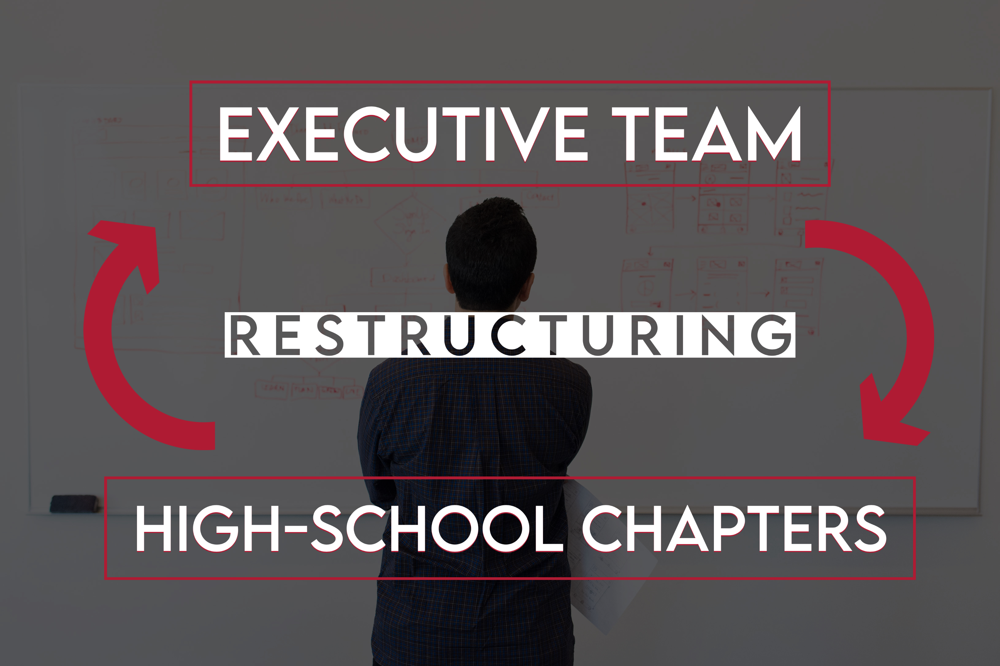

This nonprofit began between two high school friends that wanted to promote leadership and speaking skills in addition to useful, practical knowledge about the world.
National Student Speakers Association began as an organization geared specifically towards the youth founded by the youth.
Instead of having leadership as a side benefit, we cultivate leadership through organized programs that specifically target the youth with an emphasis on teaching skills behind doing so while providing a forum for empowerment.
Speaking skills are practical, not theoretical knowledge. Practical skills such as building a car require hands-on experience and practice to hone, in contrast to theoretical skills and knowledge that are in the abstract that can be learned from a textbook. Therefore, this organization seeks especially to provide chances for young individuals to gain practical speaking and leadership knowledge through exposure.

Restructuring: Creating Chapters
As our two founders began to reflect on the progress made locally in Tampa and got ready to head off to college, a new concept came to mind: an executive team of college students and local chapters helmed by high school students.
The advantage of this system was utilizing the established infrastructure in place (funding, registration, website, G Suite, and more) while expanding the mission. Most importantly, it would always remain a by the students, for the students organization.
Our Mission
Our mission is to increase accessibility and unify resources available to the youth regarding being a student and a speaker in the form of workshops, contests, a speakers bureau, and working with other organizations in a variety of city chapters to create greater accessibility with an emphasis on recording and access to materials that is free forever, for anyone.
Recognizing that other organizations operate for adult members doing youth activities as an extension along membership lines, or even in terms of who knows about the activities, we unify these under one banner. Any youth should be able to access the myriad of resources available without hassle, focusing on leadership, not on searching. We maintain everything for free, always.
Types of Programs
As of now, we currently offer the following programs:
Online Workshops:
Online workshops allow multiple people from various locations to be able to observe and participate in workshops from wherever they would like. While this is the optimal type of workshop due to inclusivity, certain things require in-person workshops.
In-Person Workshops:
In-person workshops are about topics that must be introduced and worked through in person, such as many public speaking and leadership tasks. Recognizing that not everyone can participate in this, we have recorded each of the workshops and uploaded them on our resources page.